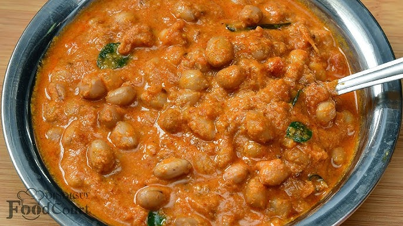

Palli Curry

Kerala Style Palli Curry
APalli curry is a flavorful and aromatic South Indian dish made with ground peanuts as the star ingredient. The rich, creamy texture of the peanuts forms the base of the curry, which is then combined with a mix of spices like turmeric, cumin, coriander, and chili, creating a deliciously tangy and spicy sauce. Often cooked with vegetables or meats like chicken or lamb, the dish can vary depending on the region, but it always delivers a satisfying balance of heat and nuttiness. Served with rice, roti, or paratha, palli curry is a comforting and hearty meal that is perfect for any occasion.! Find the full recipe below:
Ingredients
- Peanuts (roasted and unsalted) – 1/4 cup
- Oil – 2 tbsp (preferably vegetable or coconut oil)
- Onion – 1 medium, finely chopped
- Tomato – 1 medium, chopped
- Green chili – 1, slit (optional, for heat)
- Garlic – 2-3 cloves, minced
- Ginger – 1-inch piece, grated
- Curry leaves – 6-8 leaves (optional)
- Turmeric powder – 1/4 tsp
- Red chili powder – 1/2 tsp (adjust to taste)
- Coriander powder – 1 tsp
- Cumin powder – 1/2 tsp
- Tamarind pulp or lemon juice – 1 tsp (for tanginess
- Salt – to taste
- Water – 1 to 1 1/2 cups (adjust for desired consistency)
- Fresh coriander (cilantro) – for garnish (optional)
Steps
- Grind peanuts into a coarse paste with a little water.
- Heat oil in a pan, add curry leaves (if using) and sauté for a few seconds.
- Sauté onions until golden brown. Add minced garlic, ginger, and green chili. Cook for 1-2 minutes.
- Add chopped tomato and cook until soft, then stir in turmeric, red chili powder, coriander, and cumin powder.
- Mix in ground peanut paste and cook for 2-3 minutes.
- Add water (1-1.5 cups) and simmer for 5-7 minutes until slightly thickened.
- Season with salt, tamarind pulp or lemon juice, and add coconut milk (optional). Add sugar to balance if desired.
- Garnish with fresh cilantro and serve hot with rice or roti.
- Done! Enjoy your curry!
Home